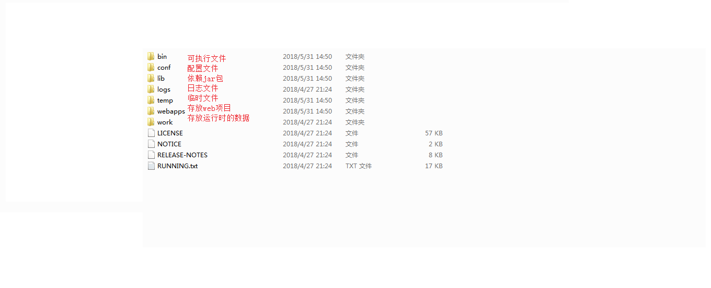
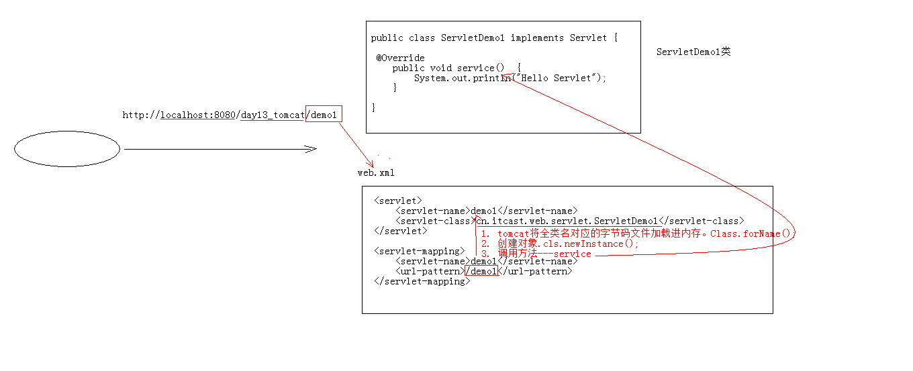

Web 相关概念
软件架构
- C/S：客户端/服务器端
- B/S：浏览器/服务器端
资源分类
- 静态资源：所有用户访问后，得到的结果都是一样的，称为静态资源。静态资源可以直接被浏览器解析
- 如： html,css,JavaScript
- 动态资源：每个用户访问相同资源后，得到的结果可能不一样。称为动态资源。动态资源被访问后，需要先转换为静态资源，在返回给浏览器
- 如：servlet/jsp,php,asp….
Web 服务器软件：
常见的 java 相关的 web 服务器软件：
- webLogic：oracle 公司，大型的 JavaEE 服务器，支持所有的 JavaEE 规范，收费的。
- webSphere：IBM 公司，大型的 JavaEE 服务器，支持所有的 JavaEE 规范，收费的。
- JBOSS：JBOSS 公司的，大型的 JavaEE 服务器，支持所有的 JavaEE 规范，收费的。
- Tomcat：Apache 基金组织，中小型的 JavaEE 服务器，仅仅支持少量的 JavaEE 规范 servlet/jsp。开源的，免费的。
JavaEE
Java 语言在企业级开发中使用的技术规范的总和，一共规定了 13 项大的规范
Tomcat
Web 服务器软件
下载
安装
解压压缩包即可。
注意：安装目录建议不要有中文和空格
启动
- bin/startup.bat , 双击运行该文件即可
- 访问：浏览器输入：http://localhost:8080
可能遇到的问题：
黑窗口一闪而过：
- 原因： 没有正确配置 JAVA_HOME 环境变量
- 解决方案：正确配置 JAVA_HOME 环境变量
启动报错：
- 暴力：找到占用的端口号，并且找到对应的进程，杀死该进程
netstat -ano
- 温柔：修改自身的端口号
conf/server.xml<Connector port="8888" protocol="HTTP/1.1" connectionTimeout="20000" redirectPort="8445" /> ```
- 暴力：找到占用的端口号，并且找到对应的进程，杀死该进程
关闭
正常关闭
- bin/shutdown.bat
- ctrl+c
强制关闭
点击启动窗口的×
配置
部署项目的方式：
直接将项目放到 webapps 目录下即可。
- /hello：项目的访问路径–>虚拟目录
- 简化部署：将项目打成一个 war 包，再将 war 包放置到 webapps 目录下。
- war 包会自动解压缩
配置
conf/server.xml文件
在<Host>标签体中配置
<Context docBase="D:\hello" path="/hehe" />- docBase: 项目存放的路径
- path：虚拟目录
在
conf\Catalina\localhost创建任意名称的 xml 文件。在文件中编写
<Context docBase="D:\hello" />- 虚拟目录：xml 文件的名称
java 动态项目的目录结构
-- 项目的根目录
-- WEB-INF 目录：
-- web.xml：web 项目的核心配置文件
-- classes 目录：放置字节码文件的目录
-- lib 目录：放置依赖的 jar 包
Servlet: Server Applet
- 概念：运行在服务器端的小程序
- Servlet 就是一个接口，定义了 Java 类被浏览器访问到 (tomcat 识别）的规则。
- 将来我们自定义一个类，实现 Servlet 接口，复写方法。
快速入门
创建 JavaEE 项目
定义一个类，实现 Servlet 接口
public class ServletDemo1 implements Servlet实现接口中的抽象方法
配置 Servlet
在 web.xml 中配置：<!--配置 Servlet --> <servlet> <servlet-name>demo1</servlet-name> <servlet-class>cn.itcast.web.servlet.ServletDemo1</servlet-class> </servlet> <servlet-mapping> <servlet-name>demo1</servlet-name> <url-pattern>/demo1</url-pattern> </servlet-mapping>执行原理：
当服务器接受到客户端浏览器的请求后，会解析请求 URL 路径，获取访问的 Servlet 的资源路径
查找 web.xml 文件，是否有对应的
<url-pattern>标签体内容。如果有，则在找到对应的
<servlet-class>全类名tomcat 会将字节码文件加载进内存，并且创建其对象
调用其方法

Servlet 生命周期
- 被创建：执行
init方法，只执行一次
Servlet 什么时候被创建？
- 默认情况下，第一次被访问时，Servlet 被创建
- 可以配置执行 Servlet 的创建时机。
- 在
<servlet>标签下配置
- 第一次被访问时，创建：
<load-on-startup>的值为负数 - 在服务器启动时，创建：
<load-on-startup>的值为 0 或正整数
- 在
Servlet 的
init方法，只执行一次，说明一个 Servlet 在内存中只存在一个对象，Servlet 是单例的- 多个用户同时访问时，可能存在线程安全问题。
- 解决：尽量不要在 Servlet 中定义成员变量。即使定义了成员变量，也不要对修改值
提供服务：执行
service方法，执行多次- 每次访问 Servlet 时，Service 方法都会被调用一次。
被销毁：执行
destroy方法，只执行一次- Servlet 被销毁时执行。服务器关闭时，Servlet 被销毁
- 只有服务器正常关闭时，才会执行 destroy 方法。
- destroy 方法在 Servlet 被销毁之前执行，一般用于释放资源
Servlet 3.0
支持注解配置。可以不需要 web.xml 了。
创建 JavaEE 项目，选择 Servlet 的版本 3.0 以上，可以不创建 web.xml
定义一个类，实现 Servlet 接口
复写方法
在类上使用
@WebServlet注解，进行配置@WebServlet("资源路径") @Target({ElementType.TYPE}) @Retention(RetentionPolicy.RUNTIME) @Documented public @interface WebServlet { String name() default "";//相当于<Servlet-name> String[] value() default {};//代表 urlPatterns() 属性配置 String[] urlPatterns() default {};//相当于<url-pattern> int loadOnStartup() default -1;//相当于<load-on-startup> WebInitParam[] initParams() default {}; boolean asyncSupported() default false; String smallIcon() default ""; String largeIcon() default ""; String description() default ""; String displayName() default ""; }